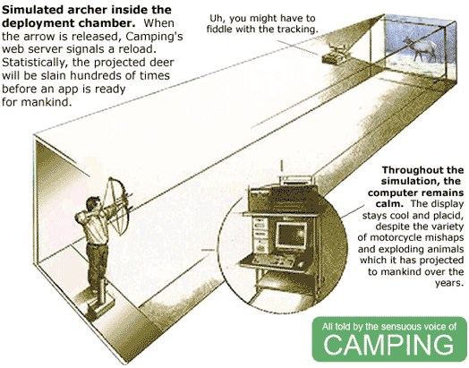

Camping is Still Your 4k Pinkyframework! #
See, still just 3909 bytes! And, yet, a sizeworthy CHANGELOG!
%w[active_support markaby tempfile uri].map{|l|require l}
module Camping;Apps=[];C=self;S=IO.read(__FILE__).sub(/S=I.+$/,'')
P="Cam\ping Problem!";module Helpers;def R c,*g;p=/\(.+?\)/;g.inject(c.
urls.find{|x|x.scan(p).size==g.size}.dup){|s,a|s.sub p,C.escape((a[
a.class.primary_key]rescue a))}end;def URL c='/',*a;c=R(c,*a)if c.
respond_to?:urls;c=self/c;c="//"+@env.HTTP_HOST+c if c[/^\//];URI(c)end;def/p
p[/^\//]?@root+p : p end;def errors_for o;ul.errors{o.errors.each_full{|x|li x}
}if o.errors.any?end end;module Base;include Helpers;attr_accessor:input,
:cookies,:env,:headers,:body,:status,:root;def method_missing*a,&b
a.shift if a[0]==:render;m=Mab.new({},self);s=m.capture{send(*a,&b)};s=m.layout{s}if
/^_/!~a[0].to_s and m.respond_to?:layout;s end;def r s,b,h={};@status=s;@headers.
merge!h;@body=b end;def redirect*a;r 302,'','Location'=>URL(*a)end;Z="\r\n"
def initialize r,e,m;e=H[e.to_hash];@status,@method,@env,@headers,@root=200,m.
downcase,e,{'Content-Type'=>"text/html"},e.SCRIPT_NAME.sub(/\/$/,'')
@k=C.kp e.HTTP_COOKIE;q=C.qs_parse e.QUERY_STRING;@in=r
if%r|\Amultipart/form-.*boundary=\"?([^\";,]+)|n.match e.CONTENT_TYPE
b=/(?:\r?\n|\A)#{Regexp::quote("--#$1")}(?:--)?\r$/;until@in.eof?;fh=H[];for l in@in
case l;when Z;break;when/^Content-D.+?: form-data;/;fh.u H[*$'.
scan(/(?:\s(\w+)="([^"]+)")/).flatten];when/^Content-Type: (.+?)(\r$|\Z)/m;fh[
:type]=$1;end;end;fn=fh[:name];o=if fh[:filename];o=fh[:tempfile]=Tempfile.new(:C)
o.binmode;else;fh=""end;while l=@in.read(16384);if l=~b;o<<$`.chomp;@in.seek(-$'.
size,IO::SEEK_CUR);break;end;o<<l;end;q[fn]=fh if fn;fh[:tempfile].rewind if
fh.is_a?H;end;elsif@method=="post";q.u C.qs_parse(@in.read)end;@cookies,@input=
@k.dup,q.dup end;def service*a;@body=send(@method,*a)if respond_to?@method
@headers["Set-Cookie"]=@cookies.map{|k,v|"#{k}=#{C.escape(v)}; path=#{self/'/'
}"if v!=@k[k]}-[nil];self end;def to_s;"Status: #{@status}#{Z+@headers.map{|k,v|
[*v].map{|x|"#{k}: #{x}"}}*Z+Z*2+@body}"end;end
X=module Controllers;@r=[];class<<self;def r;@r;end;def R*u;r=@r;Class.new{
meta_def(:urls){u};meta_def(:inherited){|x|r<<x}}end;def M;def M;end;constants.map{|c|
k=const_get(c);k.send:include,C,Base,Models;r[0,0]=k if !r.include?k;k.meta_def(
:urls){["/#{c.downcase}"]}if !k.respond_to?:urls}end;def D p;r.map{|k|k.urls.
map{|x|return k,$~[1..-1]if p=~/^#{x}\/?$/}};[NotFound,[p]]end end;class
NotFound<R();def get p;r(404,Mab.new{h1 P;h2 p+" not found"})end end;class
ServerError<R();def get k,m,e;r(500,Mab.new{h1 P;h2"#{k}.#{m}";h3"#{e.class
} #{e.message}:";ul{e.backtrace.each{|bt|li(bt)}}}.to_s)end end;self;end;class<<
self;def goes m;eval S.gsub(/Camping/,m.to_s).gsub("A\pps=[]","Cam\ping::Apps<<\
self"),TOPLEVEL_BINDING;end;def escape s;s.to_s.gsub(/[^ \w.-]+/n){'%'+($&.
unpack('H2'*$&.size)*'%').upcase}.tr(' ','+')end;def un s;s.tr('+',' ').gsub(
/%([\da-f]{2})/in){[$1].pack('H*')}end;def qs_parse q,d='&;';m=proc{|_,o,n|o.u(
n,&m)rescue([*o]<<n)};q.to_s.split(/[#{d}] */n).inject(H[]){|h,p|k,v=un(p).
split('=',2);h.u k.split(/[\]\[]+/).reverse.inject(v){|x,i|H[i,x]},&m}end;def
kp s;c=qs_parse(s,';,')end;def run r=$stdin,e=ENV;X.M;k,a=X.D un("/#{e[
'PATH_INFO']}".gsub(/\/+/,'/'));k.new(r,e,(m=e['REQUEST_METHOD']||"GET")).Y.
service *a;rescue Exception=>x;X::ServerError.new(r,e,'get').service(k,m,x)end
def method_missing m,c,*a;X.M;k=X.const_get(c).new(StringIO.new,H['HTTP_HOST',
'','SCRIPT_NAME','','HTTP_COOKIE',''],m.to_s);H.new(a.pop).each{|e,f|k.send(
"#{e}=",f)}if Hash===a[-1];k.service *a;end;end;module Views;include X,Helpers;end
module Models;autoload:Base,'camping/db';def Y;self;end;end;class Mab<Markaby::Builder
include Views;def tag!*g,&b;h=g[-1];[:href,:action,:src].map{|a|(h[a]=self/h[a])rescue
0};super end end;H=HashWithIndifferentAccess;class H;def method_missing m,*a
m.to_s=~/=$/?self[$`]=a[0]:a==[]?self[m]:raise(NoMethodError,"#{m}")end
alias_method:u,:regular_update;end end
Did you know?
- Yurt, a new Camping CMS by Robert Hahn, uses no database?
- Cheat, a social cheatware camplication gets tons of hits almost all the time?
- Bee, a personal honeyless bug tracker is jubilantly camping-camping-camping with a noseful of blogs?

Camping 1.5 is out! gem install camping --source code.whytheluckystiff.net so you can see I’d never lie to you.
why
Oh, and thanks to zimbatm who does more than his fair share of two- and three-byte hacks.
Alazoral
Sometimes camping involves spiders, my friends. Sometimes lizards. Sometimes the love of (perhaps several) good women. Simple and wholesome family values, hot and ready for action.
DerGuteMoritz
Although I’ve never used Camping, I enjoy it quite a lot. Superb piece of art!
Also: I wanted to join the cool kids and comment via hoodwink’d but it just keeps spitting 500 at my desperate attempts!
roberthahn
woo! Thanks for the link, why! Next free evening I have (‘tis the end of this one) I’ll be all over 1.5 to see if my little CMS works fine.
J`ey
Three cheers for the camping crew!
undees
Camping turned out to be just what the ranger ordered at work—needed to squirt log files into something that looks readable in a browser. And the entire source fit on one Keynote slide. whee!
zimbatm
Yay _why ! Now I guess I have to release Equipment 1.5 :) Please give me some feedback, I want to know what people think so that I can enhance my package.
rlov
“Enhance my package”, ha.
I get too much spam.
DerGuteMoritz
zimbatm: Just for the sake of orthographic correctness—shoudln’t Ext::NegociateContent be called Ext::NegotiateContent?
Anyhoo, Looks like a great package! (hah hah)
JoeyLemur
Perl-esque blobs of uncomprehesible Ruby make me die a little inside.
zimbatm
Thx for the spellcheck DerGuteMoritz :) Now I can “enhance” my p..ackage
thedaniel
Will use. Must find cool thing to make…
bubba
I’m going to start using camping when I don’t have to engage in hand to hand combat with it it to try to get it to work. :)
but still, good work!
iGL
Amazing.Many thanks to _why and zimbatm – for Equipment.
BTW , one can use camping with multiple layouts or without them at all – the latter option facilitates producing ajax responses. I simply modified Camping::Base#method_missing as is described here